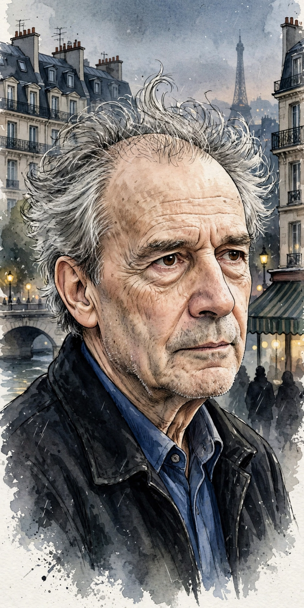

| Jacques Rivette | |
|---|---|
 Rivette, the most experimental of the Cahiers group | |
| Born | 1 March 1928, Rouen, France |
| Died | 29 January 2016 (aged 87), Paris, France |
| Occupation | Film director, critic |
| Known for | Paris Belongs to Us (1961), Céline and Julie Go Boating (1974), La Belle Noiseuse (1991) |
| Movement | French New Wave |
Jacques Rivette (French: [ʒak ʁivɛt]; 1 March 1928 – 29 January 2016) was a French film director and film critic most commonly associated with the French New Wave and the magazine Cahiers du Cinéma, which he edited from 1963 to 1965. His films are known for their unusual length, loose narratives, improvisation, and recurring fascinations with conspiracy, theatre, and secret societies in Paris.
Arriving in Paris in 1949, Rivette joined the ciné-club circle around André Bazin and wrote criticism alongside Éric Rohmer and Claude Chabrol. His first feature, Paris Belongs to Us (shot 1958–60), introduced his signature theme of an elusive Parisian conspiracy. The Nun (1966), adapted from Diderot, was banned by the French censor and became a cause célèbre.
Rivette's experiments with duration produced the thirteen-hour Out 1 (1971) and the beloved Céline and Julie Go Boating (1974), a playful, feminist fantasia on storytelling. La Belle Noiseuse (1991), a four-hour study of an artist and his model adapted from Balzac, won the Grand Prix at Cannes. His later films, including Va savoir (2001), continued his lifelong dialogue between cinema and theatre.
Rivette treated filmmaking as an investigation conducted with his actors: scripts served as starting points, plots dissolved into rehearsal and play, and Paris itself became a labyrinth of signs. Though less commercially prominent than his New Wave peers, he is regarded by critics as one of the movement's most original artists.